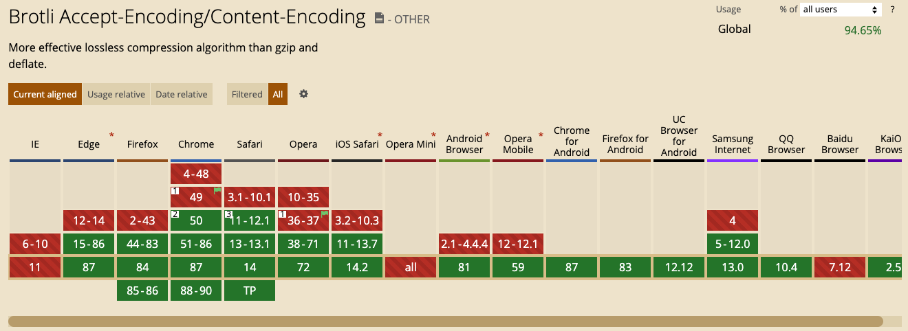
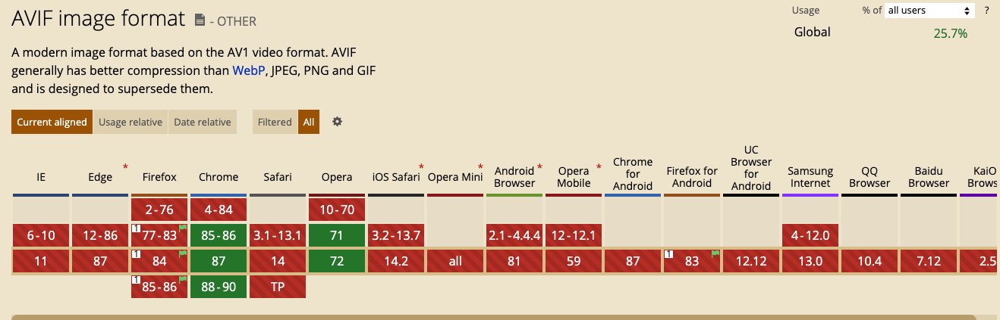
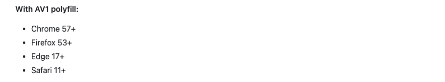
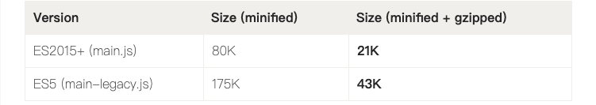
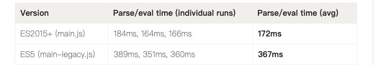
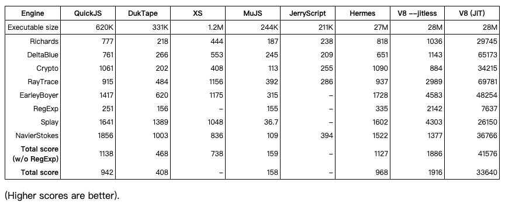

优化技术及标准的发展

资源加载
输入 url 的时候，WebKit 调用资源加载器依赖网络模块建立连接，异步或同步获取资源并存入缓存池中
高效的资源加载策略(网络协议)
高效的资源加载策略(浏览器机制)
减少链接的重定向。避免阻碍浏览器 DNS 预取技术
高效的资源加载策略(压缩算法)
针对常见的 Web 资源内容，Google 的新压缩算法 Brotli 的性能相比 Gzip 提高了 17-25%；
高效的资源加载策略(压缩算法)
针对常见的 Web 资源内容，Google 的新压缩算法 Brotli 的性能相比 Gzip 提高了 17-25%；
高效的资源加载策略(图片格式)
Netflix(流媒体影视公司) 今年情人节公布 AVIF 图片格式
AVIF由开源组织AOMedia开发，Netflix、Google与Apple均是该组织的成员。
高效的资源加载策略(图片格式)
高效的资源加载策略(图片格式)
高效的资源加载策略(图片格式)
使用 AVIF ?
高效的资源加载策略(图片格式)
使用 4kb 的 AVIF polyfill
高效的资源加载策略(ES modules)
高效的资源加载策略(ES modules)
每个支持 type="module" 的浏览器都支持你所熟知的大部分 ES2015+ 语法!!!!!
高效的资源加载策略(ES modules)
每个支持 type="module" 的浏览器都支持你所熟知的大部分 ES2015+ 语法!!!!!
- 原生支持 async 和 await 函数
- 原生支持 class 类
- 原生支持箭头函数
- 原生支持 fetch 、Promises、Map、Set
高效的资源加载策略(ES modules)
高效的资源加载策略(ES modules)
 高效的资源加载策略(ES modules)
编写 ES2015+ 代码是开发人员的胜利，部署 ES2015+ 代码则是用户的胜利！
构建渲染对象，渲染层
- 解释器根据 Token 构建 Node，形成 DOM 树
- CSS 解析完成形成 CSSOM 后，在 DOM 树上附加样式信息，构建 RenderObject 树
- 同时，WebKit 根据网页层次结构创建 RenderLayer 树
- 合成 RenderLayer 层，递归布局计算(避免不必要重绘与重排)
渲染优化时间(减少重绘)
计算布局 -> 绘图 -> 合成
渲染优化(性能红利)
- flex Grid 布局
- document.elementFromPoint(拖动时检测鼠标下的节点)
- 虚拟滚动
- contain(当前修改的元素是否独立、是否影响其他元素)
- content-visibility(跳过不在屏幕上的内容渲染)
渲染优化(减少重绘)
多 canvas 合成
- 1. 背景
- 2. 障碍物
- 3. 炸弹，金钱
- 4. 任务
Google V8 引擎
Google V8 引擎
为什么 V8 早期引入 JIT ?
Google V8 引擎
V8 创始人 Lars Bak 就是 HotSpot VM(使用范围最广的Java虚拟机) 主负责人
V8 引擎
解释器(Ignition) JIT 编译 字节码(同时解析字节码)
编译器(Turbofan 二进制代码 | Liftoff[WebAssembly])
V8 引擎优化(隐藏类)
V8 引擎优化(隐藏类)
C++ 对象(静态语言)
class Class1 {
int x;
int y;
}
int add (Class1 a, Class1 b) {
return a.x * b.y
}
V8 引擎优化(隐藏类)
class Class1 {
int x;
int y;
}
int add (Class1 a, Class1 b) {
return a.x * b.y
}
地址与类型， x: 基地址 y: 基地址 + 4 (平台确定)
V8 引擎优化(隐藏类)
静态语言 / 动态语言
- 编译确定偏移位置 / 执行确定偏移位置(可修改)
- 偏移信息共享 / 自描述，存在自身结构(空间消耗)
- 偏移信息查找 / 属性名称匹配查找(时间消耗)
V8 引擎优化(隐藏类)
function Class1(x,y) {
this.x = x;
this.y = y;
}
var a = new Class1(1,1)
var b = new Class1(2,2)
隐藏类 x: 基地址 y: 基地址 + 4
V8 引擎优化(隐藏类)
function Class1(x,y) {
this.x = x;
this.y = y;
}
var a = new Class1(1,1)
var b = new Class1(2,2)
b.z = 2
2 个隐藏类
V8 引擎优化(隐藏类)
function Class1(x,y) {
this.x = x;
this.y = y;
}
var a = new Class1(1,1)
var b = new Class1(2,2)
b.z = 2
delete 也会破坏隐藏类吗？
V8 引擎优化(隐藏类)
function Class1(x,y) {
this.x = x;
this.y = y;
}
var a = new Class1(1,1)
var b = new Class1(2,2)
b.z = 2
如何将 delete 操作影响最小?
V8 引擎优化(优化回滚)
var count = 0;
function test() {
count++
if (count < 1000000) {
return 123
}
var unknown = new Date()
return unknown
}
如何将 delete 操作影响最小?